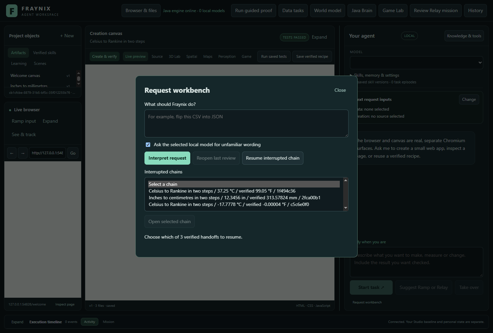
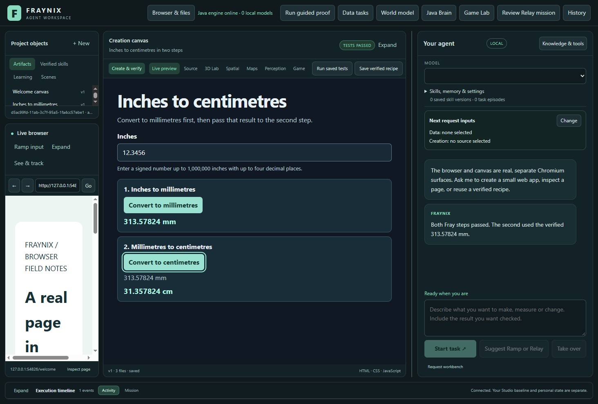
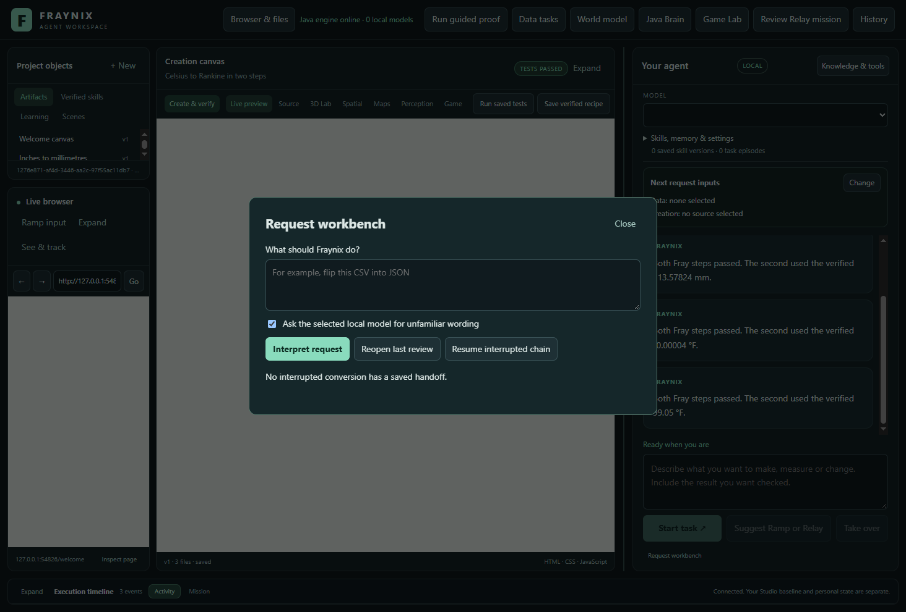

Choose among interrupted Fray chains
The Workbench lists saved Fray handoffs by input and verified value. Choose which chain to resume when several are pending after a desktop restart.

Three durable chains after the desktop restarts

The selected length chain finishes first

The Workbench confirms that every saved handoff has been resolved
System files
Open source